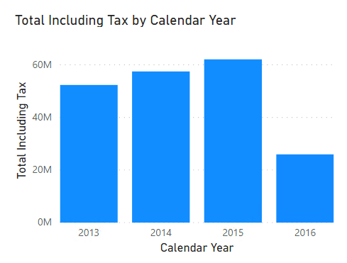
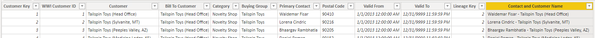
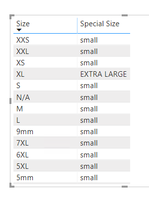
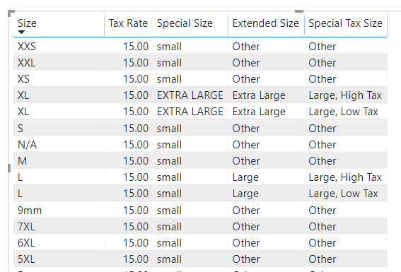

In de vorige video hebben we gekeken naar hoe DAX werkt. Daar zijn al diverse measures, calculated columns en tables voorbijgekomen. In dit mini-lab gaan we hier nog wat verder op door.
Wanneer je de video wilt terugzien, dan kan dat hier
dax-powerbi-ssas. Deze bevindt zich op het bureaublad van je cursus-VM01-introduction-to-dax open je het bestand 08-mini-lab-measures-calccolumns-tables-start
Je hebt zojuist gebruik gemaakt van een implicit measure: Power BI bedenkt onder water de DAX-query die nodig zou zijn zodat Total including Tax zich als measure kan gedragen.
SUM formule gebruiken.Binnen Dimension Customer is zowel een kolom Primary Contact (met de naam van een contactpersoon) als een kolom Customer (met de bedrijfsnaam). Onze klant wil graag één kolom waar allebei deze waarden instaan, in een specifiek tekstformaat. Het moet er als volgt uitzien:

"&special size in de tabel Dimension Stock Item. Deze moet de tekst "EXTRA LARGE" wanneer de size kolom de waarde "XL" heeft. Voor alle andere formaten (inclusief N/A) moet de tekst "small" worden weergegeven.
IF functie
Voor de volgende opgave heb je een zogenaamd geneste IF functie nodig. Dat betekent dat je één IF-statement kunt gebruiken binnen een ander IF-statement. Hier een klein voorbeeldje hoe dat kan werken - het kan handig zijn om hiermee te starten, en het vervolgens in kleine stapjes uit te werken naar de opgave:
IF([Size] = "L", "Large", IF([Size] = "XL", "Extra Large", "Others"))
Dimension Stock Item een kolom toe met de naam extended size.
Size gelijk is aan XL moet in deze kolom "Extra Large" staanSize gelijk is aan L moet er "Large" staanMocht je behoefte hebben aan wat meer uitdaging, dan kunnen we deze nog iets moeilijker maken. Voor de volgende opgave heb je zogenaamde logische operators nodig (dit is een bonus-opgave - mocht je er niet uitkomen: we gaan hierna vrij snel aan de slag met deze operators):
special tax size toe binnen de tabel Dimension Stock Item. De waarde is als volgt:

Je kunt de FILTER functie gebruiken om een filter te leggen op een tabel. De resultaten komen dan als een nieuwe tabel terug, die alleen de gefilterde inhoud bevat. Een voorbeeldje hiervan is deze Calculated Table waarin alleen de datums uit 2016 opgenomen zijn:
Dates2 = FILTER(Dates, 'Dates'[Calendar Year] = 2016)
Medium-Small Stock Items. Het moet een gefilterde versie zijn van Dimension Stock Item, waar alleen producten met size S en M zijn opgenomen.